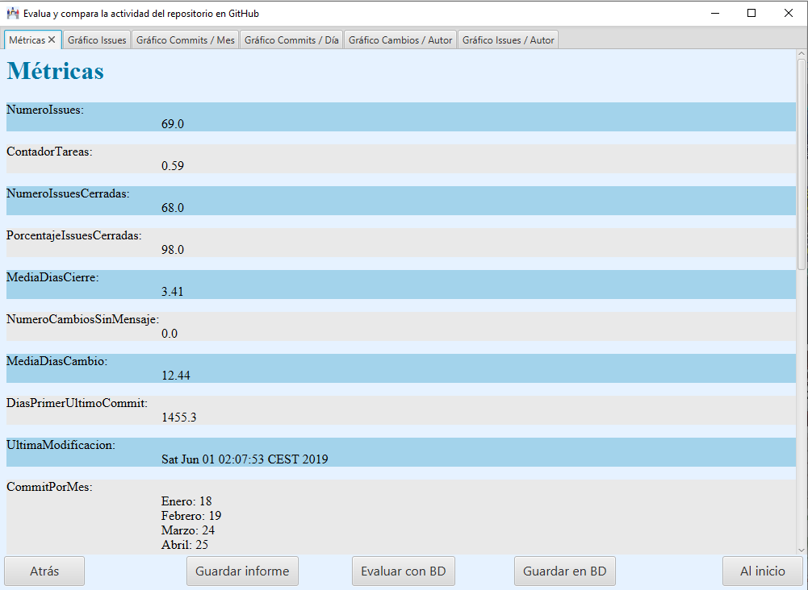
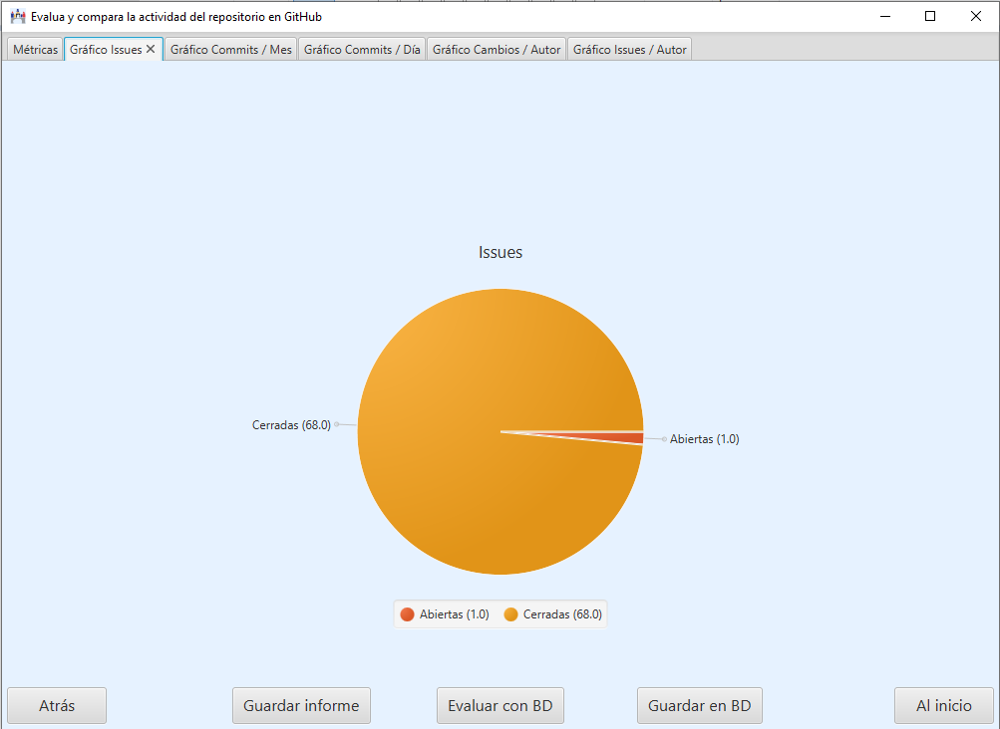

En esta pantalla se muestran los resultados de las métricas realizadas con los datos obtenidos del repositorio seleccionado en una Tab y el resto conteniendo los distintos gráficos sobre esas métricas.


Aparecen 5 botones:
El botón Guardar informe que permite guardar los resultados en un archivo para cargarlos directamente en otra ocasión.
El botón Atrás que lleva a la pantalla anterior.
Evaluar, que pasa a realizar una evaluación del desarrollo del proyecto basándose en los existentes en la base de datos.
El botón Guardar en BD, que guarda los datos de las métricas del proyecto en la base de datos.
El botón Al inicio para volver a la pantalla inicial.